1. Overview
ExCas-Analyzer quantifies the outcomes of a CRISPR cut from paired-end amplicon sequencing on standard Illumina platforms. It counts wild-type reads, small insertions, small deletions, substitutions and large deletions together, in long-range amplicons of several kilobases.
Each analysis compares a Cas9-treated sample with an untreated control amplified with the same primers. Large deletions that also appear in the control are treated as PCR artefacts and left out, so what remains can be attributed to the nuclease.
The analysis runs inside your browser (WebAssembly). Your sequencing files are not uploaded anywhere, and no account or login is needed.
2. Tutorial: the HPRT1 example
The page comes with a simulated example: a 9,411 bp amplicon of HPRT1, an SpCas9 target, and 40,115 read pairs each for an untreated control and a Cas9-treated sample named SIM. It takes a few seconds to run.
Step 1. Load the example
On the main page, click Load example · HPRT1 at the bottom of the form. It fills in the four FASTQ files, the sample name, the reference sequence, the PAM (SpCas9, NGG), the target (AGCCCCCCTTGAGCACACAG) and the gene name. Download example saves the same input files, so you can look at them or upload them yourself.
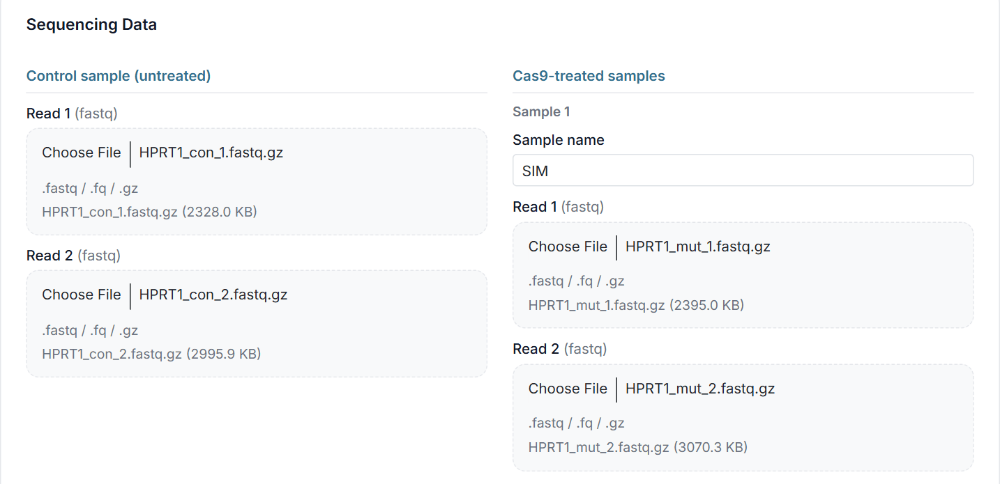
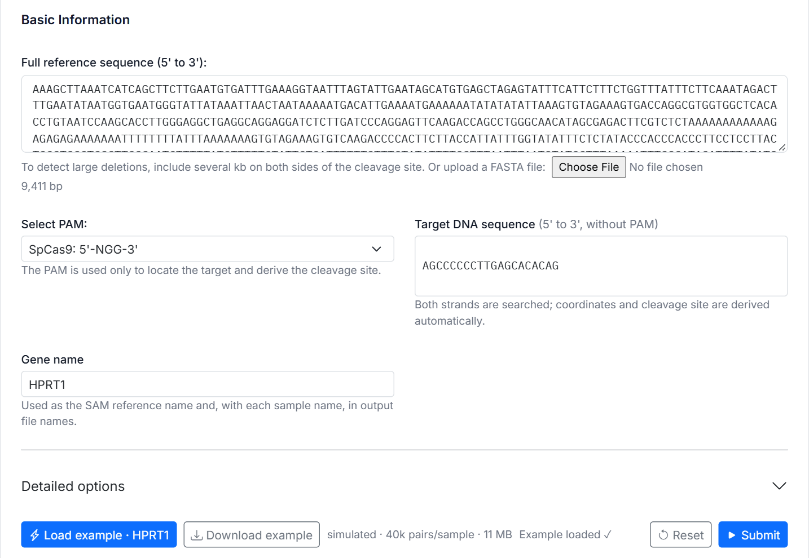
Step 2. Submit and follow the progress
Click Submit. The page first shows where it found the target: here positions 4,653–4,672 on the reverse strand, with the cleavage site at 4,656 (the first base after the cut). Check this before waiting for the results. The bars then follow the alignment of each sample and the result files being written.
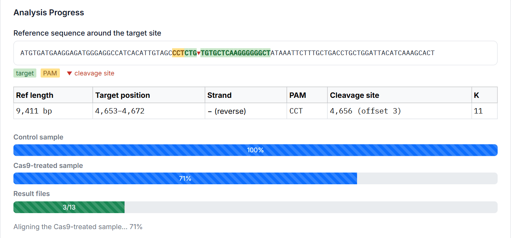
Step 3. Read the results
The results start with the summary table, then Figures 1–7. In the example, the Cas9-treated sample has 1,168 pairs used in the analysis: 15.2% wild type, 17.9% small insertions, 19.8% small deletions and 41.8% large deletions. The control is 87.7% wild type. Interpreting the results explains each part.
Step 4. Save the result files
Download all saves each sample's result files as one zip, here
HPRT1_SIM.zip. Individual files lists the zips, to save one
sample at a time. New analysis, at the bottom of the results, goes back
to the form; Reset clears it.
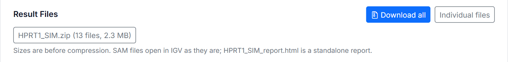
3. Sample output
The output of the HPRT1 example, run with the default options:
- HPRT1_SIM_report.html — the standalone HTML report; opens in the browser
- HPRT1_SIM.zip (425 KB) — all 13 result files: the summary tables, the report and the SAM files
And its input, the files that Load example uses:
- HPRT1.fa — the reference
- HPRT1_con_1.fastq.gz, HPRT1_con_2.fastq.gz — the control
- HPRT1_mut_1.fastq.gz, HPRT1_mut_2.fastq.gz — the Cas9-treated sample
Running the example yourself gives the same files, apart from the date in the report. The reads are simulated, so the numbers show how the output looks, not the editing outcome of a real experiment.
4. Preparing your own data
- Sequencing data: paired-end FASTQ files, Read 1 and Read 2, for an
untreated control and for each Cas9-treated sample, all amplified with the same primers.
Plain or gzipped (
.gz, including bgzip); bzip2, xz and zstd are not supported. - Batch mode: up to 4 Cas9-treated samples in one run, each compared
with the same control, reference and target. Sample names must be unique and cannot
contain
\ / : * ? " < > |. - Reference: the whole amplified sequence, 5' to 3', pasted or as a FASTA file. A large deletion can only be found if both its ends lie inside the reference, so include several kb on both sides of the cleavage site.
- Target: the protospacer, 5' to 3', without the PAM. Both strands are searched, and it must occur once in the reference.
- PAM: used only to find the target and place the cut (for SpCas9, 3 bp from the PAM). With No PAM, enter the cleavage offset under Detailed options.
- Gene and sample names: used as the SAM reference name and in the
output file names,
{gene}_{sample}_…. - Detailed options: the defaults suit most data. Each option is described on the page, with its name in the command-line version.
- Memory: each run needs about its uncompressed FASTQ size plus 1 GB; use a desktop browser for real data sets.
5. Interpreting the results
The results count read pairs: each pair is one DNA molecule from the amplicon, and it gets one class. All coordinates are 1-based, and the cleavage site is the first base after the cut.
5.1 Mutation classes
| Class | Meaning | Its reads (treated / control) |
|---|---|---|
| WT | The pair spans the cleavage site with no change within ±13 bp of it. | site_mut.sam / site_ctr.sam |
| Ins | A small insertion within ±13 bp of the cut. | site_mut_sm.sam / site_ctr_sm.sam |
| Del | A deletion within ±13 bp of the cut, shorter than the large-deletion length (50 bp by default). | |
| Sub | Substitutions only, within ±13 bp of the cut. | |
| LargeDel | A deletion of at least the large-deletion length, found either inside one read (a split read) or as a gap between the mates, and not found in the other sample. The paper's definition of a large deletion is 100 bp or more; set Large deletion minimum length to 100 to use it. | mut_only.sam / ctr_only.sam |
| TermIns | A read soft-clipped at the cut: its end does not match the reference, usually an insertion that runs off the end of the read, so its length and exact position are unknown. | site_mut_clip.sam / site_ctr_clip.sam |
Large insertions, inversions and complex rearrangements are not called. Pairs carrying them fall in none of the classes: they are left out, not counted as zero.
5.2 Summary table (Table 1)
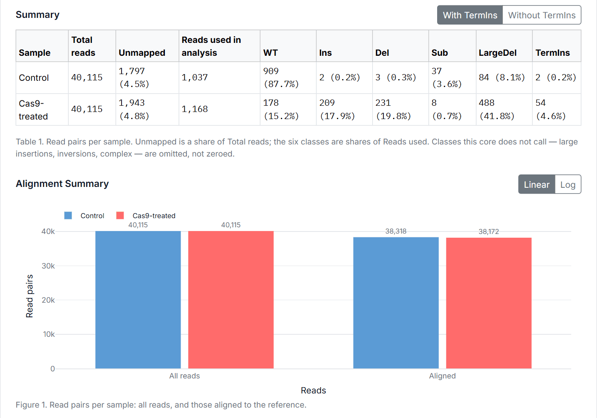
- Total reads: read pairs in the FASTQ files.
- Unmapped: pairs that could not be aligned to the reference, with their share of Total reads. A high share can mean the reference does not match the amplified region.
- Reads used in analysis: the pairs that can be classified, which are the pairs spanning the cleavage site plus the large-deletion pairs. It is the sum of the six classes and the denominator of their percentages. In a long amplicon it is far smaller than the aligned pairs (here 1,168 of 38,172), because most pairs lie away from the cut and say nothing about it.
- WT … TermIns: each class's pairs, as a share of Reads used.
Compare the treated row with the control row. The control shows the background from sequencing errors and PCR: a class at a similar level in both rows is not evidence of editing. In the example, substitutions are 3.6% of the control and 0.7% of the treated sample, so they are background, while small indels and large deletions appear only in the treated sample.
Editing efficiency. The share of pairs that are not WT is the report's Edited figure (84.8% in the example). It includes substitutions and terminal insertions, so read it against the control (12.3% not WT here), or add up only the classes you count as edits.
5.3 Large deletions and the control
- Split reads: one read aligns on both sides of the deletion, so its length is exact.
- Mate gap: neither read crosses the deletion, but the gap between the two mates is at least Minimum mate gap (400 bp by default). The length is estimated as the pair's span less the median insert size of the WT pairs, and Figure 5 marks it as estimated.
- Common with the control: a treated deletion that the control also has is judged a PCR artefact and removed. With the default pair-based test, it is common when at least 4 control pairs have both breakpoints within max(20 bp, 2% of its length) and their frequency is at least half the treated one. The k-means test, the paper's method, compares cluster centres instead and can vary between runs for deletions over 2 kb. The note under Figure 2 says which test ran.
- What is left out: the removed pairs are not in Reads used. Their count
is in
mutation_summary.tsvaslarge_deletion_common_excluded(235 in the example), and their reads are inmut_common.sam. The same applies the other way round to the control row. - Size limit: deletions whose read ends lie more than Cleavage-site tolerance (8,000 bp by default) from the cut are not called.
- Above 2 kb: the split between treated-only and common deletions is sensitive to the input and does not reproduce exactly from a single run. When you report this size range, give its spread across replicates.
5.4 Terminal insertions and clip rescue
- Clip rescue (on by default) re-calls a soft clip within 13 bp of a read end as a small indel when the same allele is seen with full anchors in at least 3 pairs of the sample. The note under Figure 2 gives how many were re-called (33 of 87 in the treated example). The rest stay TermIns.
- With / Without TermIns, above the summary table, decides whether those
pairs count. Without them, they leave Reads used, and the other classes, the figures,
the viewer and the batch summary are recomputed. The core's files do not change; the
zip gains
{gene}_{sample}_mutation_summary_no_termins.tsv. Say which one you report.
5.5 Figures 1–7
Figures 3–6 are for the sample picked with Control / Cas9-treated above Figure 3; Figures 3, 4 and 6 also for the window picked there (±15, ±30 or ±60 bp around the cut). A red dashed line marks the cleavage site.
Figure 1. Alignment summary (above, with Table 1): all read pairs and the aligned ones, per sample, on a linear or log scale. The two bars of a sample should be close; a large gap means many unmapped pairs.
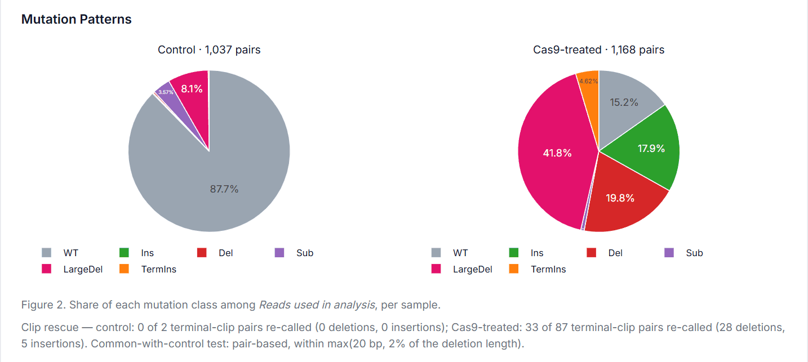
Figure 2. Mutation patterns: the six classes of Table 1 as pies, one per sample. The note below it gives the clip-rescue counts and the common-with-control test.
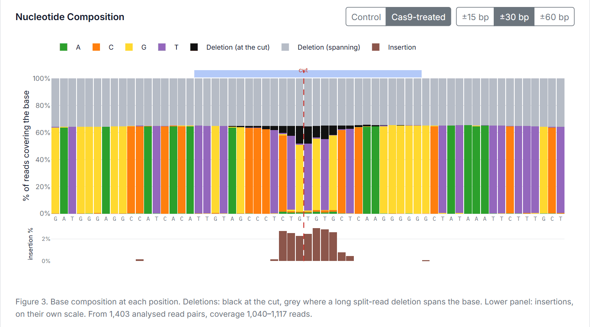
Figure 3. Nucleotide composition: for each base around the cut, the share of reads showing A, C, G or T, a deletion at the cut (black), or a long split-read deletion spanning the base (grey); insertions are in the lower panel, on their own scale. The blue bar on top marks the ±13 bp window. A wild-type position is one colour, the reference base. It draws every read in the SAM files, including the large deletions also found in the control, so it covers more pairs than Reads used (1,403 in the example). With fewer than 100 reads at a base, the note warns that the percentages are not stable.
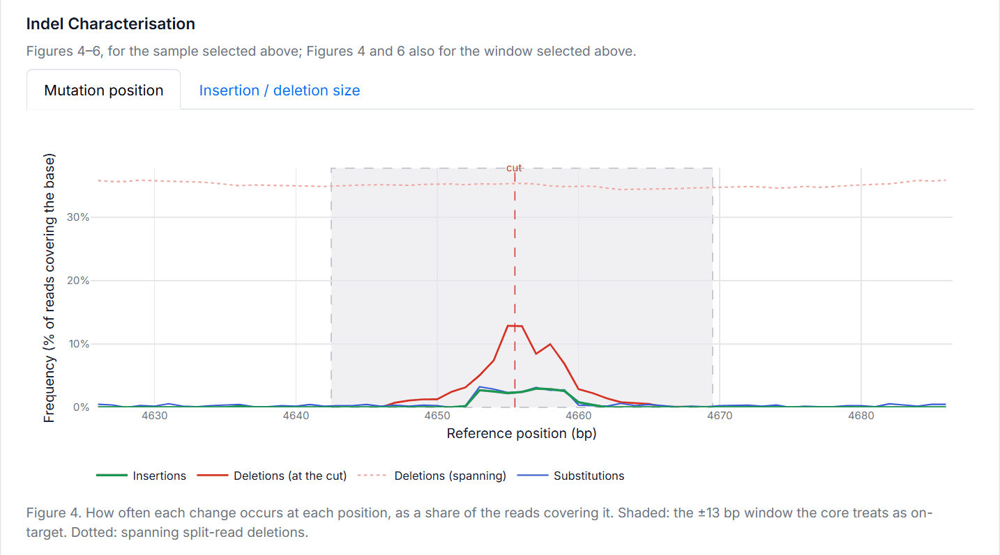
Figure 4. Mutation position: how often each kind of change occurs at each position, as a share of the reads covering it. Shaded: the ±13 bp window counted as on-target. Cas9-induced indels peak at the cut, as here; changes spread evenly along the window, or at the same level in the control, are background.
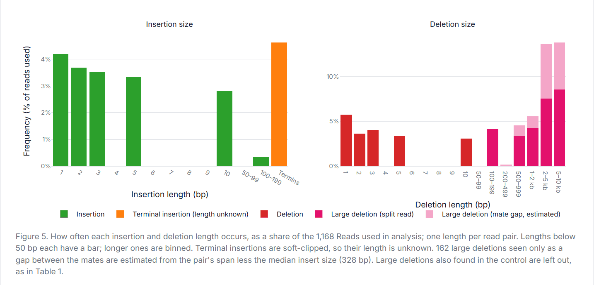
Figure 5. Insertion and deletion size (the Insertion / deletion size tab): how often each length occurs, as a share of Reads used, one length per pair. Lengths below the large-deletion length have a bar each; longer ones are grouped (100–199 bp, …, 2–5 kb). Terminal insertions have their own bar, as their length is unknown. Large deletions are split into exact lengths from split reads and estimates from mate gaps (light pink). Deletions also found in the control are left out, as in Table 1.
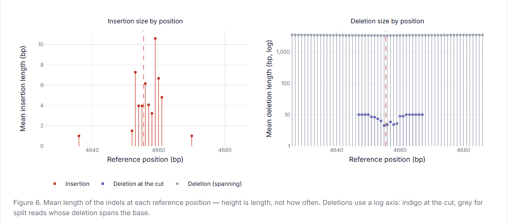
Figure 6. Indel size by position: the mean length of the indels at each position. Height is length, not frequency. Deletions use a log axis: indigo at the cut, grey for split-read deletions spanning the base.
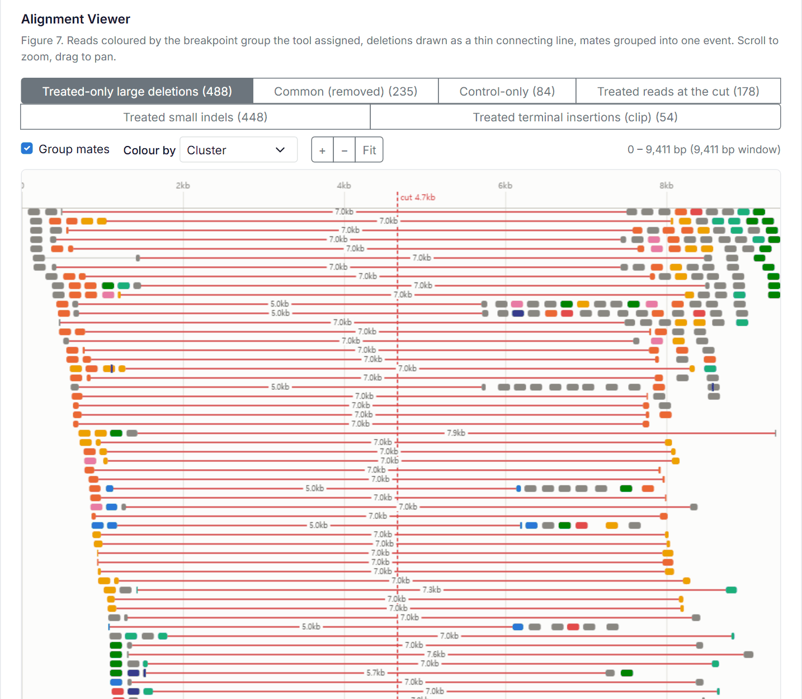
Figure 7. Alignment viewer: the reads of one SAM file at a time, picked with the buttons above it (each with its pair count):
- Treated-only large deletions (
mut_only.sam), judged CRISPR-induced - Common (removed) (
mut_common.sam), also in the control - Control-only (
ctr_only.sam) - Treated reads at the cut (
site_mut.sam), the WT pairs - Treated small indels (
site_mut_sm.sam) - Treated terminal insertions (clip) (
site_mut_clip.sam), hidden without TermIns
Each row is one pair (with Group mates); a thin line is a deletion, thick red a deletion of 50 bp or more, and a purple tick an insertion; the blue band is the protospacer. Colour by picks the breakpoint group the tool assigned (Cluster), large deletions only, or strand. Hover over a read for its details; scroll to zoom, drag to pan, Fit to see the whole reference. A convincing large deletion has reads joined across the cut, with breakpoints shared by several pairs.
5.6 Batch summary
With more than one treated sample, the results start with a batch summary: one row per
sample, with the same columns as Table 1. Click a row, or pick a sample, to show its
results below. A failed sample shows why; the others still finish.
Download batch saves {gene}_batch_results.zip, holding
batch_summary.tsv and a folder of result files per sample.
5.7 Result files
Each sample's zip, {gene}_{sample}.zip, holds files named
{gene}_{sample}_{suffix}:
| Suffix | Contents |
|---|---|
mutation_summary.tsv | Pairs and percentage per class, per
sample: the numbers of Table 1. Rows whose percent is NA are counts
outside the percentages: not_covered_excluded (pairs left out as not
covering the cleavage site), large_deletion_common_excluded and
aligned_pairs_all_positions. |
mutation_summary_no_termins.tsv | The same without terminal insertions; only when Without TermIns is selected. |
report.html | The standalone report (5.8). |
report.tsv | The run's parameters, the count of each class,
and the length histograms behind the report. Its coordinates are the core's, 0-based:
targetst 4652 is position 4,653. |
mut_only.sam, ctr_only.sam | Large deletions found only in that sample. |
mut_common.sam, ctr_common.sam | Large deletions found in both samples, removed. |
site_mut.sam, site_ctr.sam | WT pairs spanning the cleavage site. |
site_mut_sm.sam, site_ctr_sm.sam | Small indels and substitutions within ±13 bp of the cut. |
site_mut_clip.sam, site_ctr_clip.sam | Pairs soft-clipped at the cut (terminal insertions). |
The SAM files open in IGV or any SAM viewer, with the reference named after the gene.
Each record carries the call in the tag XV:Z (WT,
INS, DEL, SUB, CLIP,
LDEL_ONLY or LDEL_COMMON); large deletions also carry their
breakpoint group in YC:Z, and pairs re-called by clip rescue
XR:Z. Empty files are not included, so a sample with nothing in a class has
fewer files.
5.8 The HTML report
The report (example) opens offline in any browser and is in English. Its sections:
- Summary: aligned pairs; pairs classified (spanning the cut site); Edited, the share that is not wild type; the longest insertion; and the reads with insertions of 8 bp or more.
- Indel size spectrum: indels within ±13 bp of the cut, counted by length, deletions on the left and insertions on the right.
- Classes per sample: the class shares as stacked bars, also as a table.
- Large deletion sizes: split-read deletion lengths, treated and control side by side, so the artefact level can be seen. It marks the range above 2 kb, where results need replicates (5.3).
- Insertion sequences of 8 bp and up: each long inserted sequence, counted directly in the raw treated and control reads, per million reads. The verdict: Treated only; Also in the control · artefact, co-amplified background rather than a CRISPR product; or Weak evidence, fewer than 5 raw reads. The control filter of 5.3 applies to large deletions only, so this is where insertions are checked.
6. Limitations
- Not detected: large insertions, inversions, complex events, and precise or partial editing.
- Batch mode analyses the control again with each treated sample, as the core compares the two in one run.
- Each run uses one processor thread; a batch is faster only by running samples side by side.
- The analysis works offline, but the charts and styling load from public CDNs.
7. Licence
ExCas-Analyzer is free to use, with no registration, for non-commercial and commercial use alike.
- Software: licensed under the
GNU
General Public License v3.0 (GPL-3.0). You may run, study, share and modify it; if you
distribute it, or a version you changed, you must do so under the same licence and with
its source code. The full text is in the
LICENSEfile that comes with the source code. - Help pages: this page, its text and screenshots, are licensed under Creative Commons Attribution-ShareAlike 4.0 International (CC BY-SA 4.0). You may share and adapt them, giving appropriate credit and sharing your adaptations under the same licence.
- Third-party components keep their own licences: Bootstrap, Bootstrap Icons, Plotly.js and fflate (MIT), and the Inter and IBM Plex Mono fonts (SIL Open Font License 1.1).